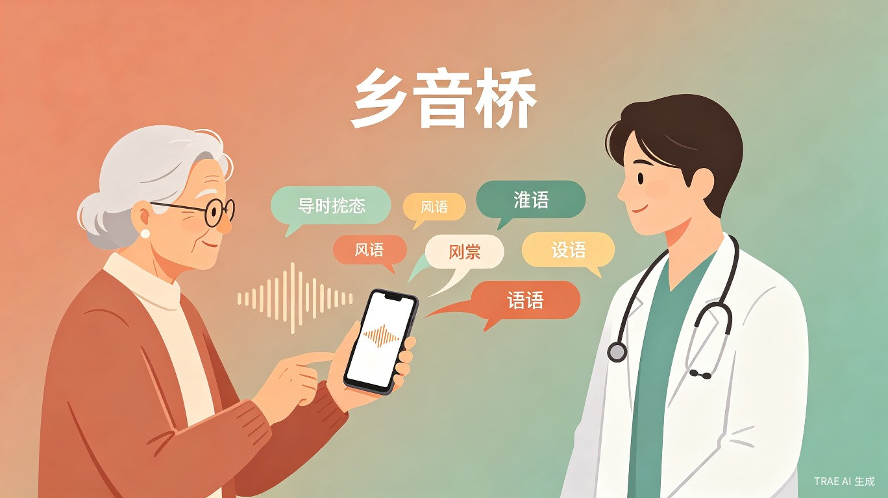

1. 创意名称 + 创意介绍
创意名称
乡音桥 — 一座用 AI 搭建的桥，让老人用熟悉的乡音，也能顺畅连接外面的世界。
想解决什么问题
很多老年人一辈子习惯说方言，但随着城市化、子女外出、护工流动，他们越来越频繁地遇到"语言不通"的困境。去医院描述不清症状，和外地护工交流困难，想用语音助手查个天气，却发现设备根本听不懂方言。语言本应是连接彼此的纽带，如今却成了横亘在老人与现代社会之间的一堵墙。
为什么会想到做这个
我观察到身边很多老人因为"不会说普通话"而在日常生活中处处受限。他们不是没有需求，而是现有的技术产品都在要求他们改变——改变语言习惯、改变操作方式。这让我想到：技术应该去适应人，而不是让人去适应技术。如果能让老人继续用熟悉的乡音，就能让他们更自在、更有尊严地融入数字生活。
大概是什么产品
一款面向老年人的语音翻译小程序，支持实时方言与普通话双向语音翻译，针对就医、购物、家庭通话等高频场景做了适老化交互设计，大按钮、大字体、一键语音，让老人用得上、用得好。
2. 目标用户及痛点
面向哪些用户
核心用户
60 岁以上、以方言为主要日常交流语言的老年人，尤其是独居老人、与子女异地居住的老人。
延伸用户
照顾老人的子女和护工、医院/银行/社区服务中心等公共服务窗口的工作人员。
在什么场景下使用
老人去医院看病，向普通话医生描述症状；子女打电话回家，老人说方言子女听不懂；老人在超市、银行需要与工作人员沟通；老人想用语音助手打电话、查天气，但只会说方言。
当前痛点
"没有这个产品，老人只能依赖家人陪同才能出门办事，独立性被大大削弱；公共服务窗口因方言沟通效率低，容易产生误解；现有翻译工具操作复杂、界面小，完全不适合老年人使用。"
3. 价值与意义
社会价值
语言是老人与世界连接的桥梁。乡音桥不是要老人去适应技术，而是让技术适应老人——尊重他们的语言习惯，守护他们的尊严和独立生活能力。在老龄化社会背景下，缩小"语言数字鸿沟"本身就是重要的社会命题。
效率提升
对于公共服务场景，双向实时翻译能显著降低沟通成本，减少因语言误解导致的服务反复和纠纷，提升基层服务效率，让"最后一公里"的服务真正触达每一位老人。
用 TRAE AI 的能力，让乡音不再是被遗忘的声音，
而是连接代际、连接城乡、连接人心的温暖桥梁。